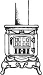
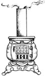
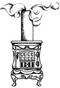
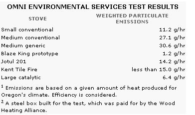

Have you put off buying a better-performing wood-burning heater? Perhaps the time has come.
One of the quickest and most convincing ways to learn the true worth of a gallon of oil is to cut enough firewood to duplicate its heating value. In raw Btu, it takes about 20 pounds of wood to equal a gallon (about 7.5 pounds) of fuel oil. Imagine toting a winter's worth of fuel oil home in quart bottles-after having pumped it up out of the ground-and pouring it into a heater every few hours! As appalling as that prospect sounds, people who burn wood perform a ritual that's very similar ...except that they haul twice as many pounds every winter.
Contemplating the amount of labor that goes into heating with wood can be depressing, but what really hurts is the fact that about half of the energy available in the fuel goes to waste. Worse yet, much of the 50% that gets away pollutes the air or sticks to the inside of the chimney.
The trade-offs of heating with wood have been a fact of life for decades. And, until the question of pollution came up a few years back, few wood burners considered it a bad deal. With a moderate amount of honest labor, anyone who burns wood can save on his or her heating bill. And trees are a renewable source of energy. The alternatives-oil, gas, and electricity-are more expensive than wood and are becoming even pricier as the supply of fossil fuels is depleted. Furthermore, fossil and nuclear energy sources can't lay claim to great efficiency themselves. By the time usable heat is delivered by most conventional energy sources, at least half of the Btu have escaped. And, just as is the case with wood burning, pollution is one of the major by-products of inefficiency. Therefore, we wood users must ask ourselves two questions about this tradeoff: Just how bad is the problem of pollution from wood stoves, and what can be done about it?
SMOKE GETS IN YOUR EYES
In some locales, wood stove pollution is quite serious, constituting the major source of particulate emissions. And on a national basis, wood burning produces a significant share of some very dangerous compounds. According to Dr. Dennis Jaasma, a wood-combustion research scientist at Virginia Polytechnic Institute and State University, the most threatening pollutants are particulates, vapor-phase hydrocarbons, and carbon monoxide. All of these substances can be drawn deep into the lungs through normal breathing, and thus pose various health hazards. Scientists don't know for sure what the annual national contribution of wood burning may be to the emission of these compounds, but estimates have been made that the numbers are about 0.7%, 2.5%, and 4%, respectively. (By comparison, diesel engines contribute about 1% of the national annual particulate emissions and are regulated by the Environmental Protection Agency.)
But it's actually a subcategory of particulates and vapor-phase hydrocarbons that may be of the greatest concern. Many polynuclear aromatic hydrocarbons (PAH) are known to be mutagenic and carcinogenic, and it has been estimated that wood stoves emit about 36% of the total annual load of these compounds in our atmosphere. However, there is great uncertainty in this estimate, because not enough research has been done. What's more, the testing procedures for measuring PAH are expensive, complicated, and of dubious accuracy. Jaasma believes the uncertainties are such that the PAH contribution from stoves could lie anywhere in the 5 to 75% range. In any event, this makes wood stoves a major source of PAH.
REVULSION = REVOLUTION
The presence of smoke is blatantly obvious to anyone living just downwind from the chimney of an active wood stove, and regulatory agencies have taken notice of what comes from such flues. In Oregon, the sale of "dirty" wood-burning space heaters will be banned as of January 1, 1986, and in 1988 the rules will become significantly more strict. Colorado has passed a law that may result in regulations patterned after Oregon's, but it will also cover fireplaces by requiring certain design features. Up in Missoula, Montana, episodic wood stove pollution has become so severe that there are prohibitions on burning during alerts, and an outright ban on wood burners has been considered. file voter, there will decide the issue in November.
Under Oregon's new emission regulate as of July 1, 1984, manufacturers had the option of getting their stoves (fireplaces and furnaces are exempt) tested for emissions and efficiency. After July 1, 1986, the sale of noncatalytic wood-burning space heaters that emit more than 15 grams of solid and condensable hydrocarbons (loosely called particulates) per hour, or catalytics that emit more than 6 grams per hour (g/hr), will be prohibited In 1988, these limits will drop to 9 g/hr for noncatalytics and 4 g/hr for catalytic
Why the differentiation between stoves have catalytic combustors and stoves that don't? Oregon's Department of Environmental Quality (DEQ) assumes that the performance of catalysts will degrade over time. making their aggregate emissons equal those of heaters not equipped with the pollution-scrubbing afterburners.
The Oregon DEQ regulations are designed to yield a 75 to 80% reduction in particulate emissions from wood stoves over the next 15 to 20 years. The specified emission levels are based on estimates of wood consumption rates, the heating degree-days of the Oregon climate, and an anticipated 15-year life for existing stoves. By the year 2000, the regulators hope that nearly all the wood stoves in Oregon will be of the clean-burning type. According to the DEQ's Barbara Tombleson, a public education campaign will help to convince wood users that-because of improvements in efficiency-state-approved heaters will both clear the air and reduce the quality of wood needed to heat a home: "This reg ulation is really intended to encourage cleaner and more efficient technology."
Indeed, the heavy hand of regulation is at least to some degree, responsible for bringing on amazing progress in wood stove design. Less than five years after the first scientific warnings about the hazards of pollution from wood-burning stoves appeared, a whole new generation of heaters has been born to meet the demand for clean-burning equipment.
This is a turn of events we consumers should be most pleased about. In nearly every case, dramatic reductions in emissions yield concomitant improvements in efficiency. Simply put, if you burn more of the fuel rather than allowing it to go up in smoke, you get more heat (all other things being equal). As a result, if you're in the market for a wood stove this fall, you can choose from a number of appliances that are half again as efficient as the outmoded "airtight" models. Dr. Jay Shelton of Shelton Energy Research says "A decade ago, I wouldn't have guessed that such large improvements would be made so quickly. Today a consumer can buy a stove that is 90% cleaner at the critical low burn rates and that uses 30% less wood than the best that were available five years ago."
MAKING SENSE
If you're going to make a wise decision about buying a new-technology heater, you're going to have to understand the fundamentals of wood stove efficiency and emissions testing. There are several ways to go about examining a heater's performance, and the numbers from one source aren't necessarily comparable to those from another. Unfortunately, as has been the case for years, some manufacturers are willing to misuse such numbers in advertising.
Inefficient wood stoves squander our hardwon cords in two ways. First, complete combustion never occurs throughout the firebox of a typical "airtight" heater. (Airtight is a comparative, rather than absolute, expression.) There's likely to be some smoldering of the fuel, and some of the incompletely burned products of this smoky fire exit the chimney without being burned. This is often called chemical loss. Second, the heat generated by the combustion of the portion of the fuel that actually burns can't all be delivered into a room. Some of that warmth must be dedicated to boiling water in the wood-both that left from incomplete drying and that generated during chemical reactions of combustion. Furthermore, because the temperature of the gas in the chimney is bound to be greater than room temperature when it leaves the house some of the heal of combustion escapes, blown away with the flow of gases.
Because of these distinct areas of loss, every wood stove has two measurable efficiencies: its combustion and its heat-transfer efficiency. The product of these two numbers, which we'll call the overall efficiency, is the only figure that will tell you how much heat you'll actually get by burning a cord of wood in a particular stove.
Let's look at an example of how combustion and heat-transfer efficiency figures can be misused. A masonry fireplace may have a high combustion efficiency-say in the range of 90%-simply because there's an unrestricted supply of air to the burn zone. However, so much excess air may get sucked up the chimney while the fire is burning that little or no neat is delivered into the room. With a combustion efficiency of 90% and a heat-transfer efficiency of 0%, the net Btu delivered into the room by the fireplace will be zero. A typical airtight heater, on the other hand, may be able to achieve only a 60 or 70% combustion efficiency; but because its heat-transfer efficiency is 70 or 80%, it may have an overall efficiency of 42 to 56%. Thus, if you looked only at combustion efficiency, you might assume that the fireplace is a better heater.
There are two methods of measuring wood stove efficiency in common use today. The calorimeter room is simply a heavily insulated and instrumented chamber that directly measures the heat output of an appliance. Calorimeter-room techniques are well established, and the figures are widely accepted. In fact, the Wood Heating Alliance (a wood stove manufacturers' trade association) labels wood stoves for certifiable calorimeter-room efficiency. This is a voluntary program, though, and so far, few manufacturers have opted to pay the tab for the rather expensive procedure.
A sometimes less expensive approach to measuring heater efficiency is to make an indirect determination by looking at what comes out of the chimney. The stack-loss efficiency method, as it's called, is widely practiced ...and widely disputed. It has the advantage of giving separate combustion and heat-transfer efficiency numbers, but the overall efficiency derived from those readings is less dependable than the number provided by a calorimeter room. Stack loss measures the stack temperature and "counts" the quantity of carbon monoxide, hydrocarbons, and other compounds in a stove's exhaust, and then subtracts the fuel value that was lost out of the chimney from the energy that was available in the fuel.
This technique is sensitive to assumptions made about what the chemical makeup of the fuel was in the first place. Since wood from different parts of trees and from trees of different ages is used in tests, it's hard to be certain about the exact composition of any given pound of wood. To show what can happen, Jay Shelton cited an example from a study he and Dennis Jaasma are doing for the U.S. Department of Energy. "If one changes the estimate of the amount of hydrogen in wood by 1%-and this is a difference of opinion that actually exists between testing labs in the U.S. and Canada-the overall efficiency of the appliance can be altered by as much as 15%."
When you're judging appliances according to their overall efficiencies, then, it's important to know what testing method was used. Calorimeter measurements appear to be pretty dependable; but if the appliance has been tested by stack loss, you should take the results with a grain of salt. Recent studies sponsored by the Wood Heating Alliance show that the overall efficiency of a given appliance measured by calorimetry is usually lower than the rating provided by stack loss measurement. Further, stack-loss efficiencies from two labs aren't always comparable. If you're comparing numbers generated by the same testing facility, though, you're on more solid ground. Because that lab probably will have used the same assumptions and techniques, the reported overall efficiencies are more likely to be comparable. And what if the salesperson at your local stove store has no idea what a stack loss is, let alone who did the testing? Well, at least you can take comfort in the thought that the manufacturer had enough confidence in its product to actually have someone test it.
CLOUDY QUESTIONS
But what of the emissions regulations? If you're not confident of advertised efficiency figures, are the figures supplied on labels required for emissions standards likely to direct you to the right wood stove? Well, maybe.
Oregon's testing protocol has generated a fair amount of controversy among wood-combustion research scientists. Because it's likely that the DEQ regulations will serve as the model for many other states, it's particularly important that the test methods be the best possible. The ideal approach would be both accurate and inexpensive.
For the time being, Oregon is using a traditional method of sampling particulates, called Oregon Method 7 (OM7). Other systems-such as an inexpensive particulate sampler made by the Condar Company-may, after suitable testing, be deemed equivalent to OM7 by DEQ.
OM7 uses a complicated sampling apparatus that requires constant attention from skilled technicians, plus extensive post-test labor. As a result, the Oregon four-run test series costs at least $6,000 (plus a $1,600 first- time, and $800 subsequent, certification fees). It's the most complicated and expensive particulate sampling method in common use to day. Does it yield superior accuracy? No one knows, because no one knows exactly how to relate what the OM7 samplers capture to what happens to woodsmoke when it enter the atmosphere. What are OM7's advantage Results can be roughly compared to the various versions of the Environmental Protection Agency's Modified Method 5, for which a great deal of data exists. Also, the DEQ is accustomed to using it to measure pollution from wood kilns.
Furthermore, the DEQ has decided that overall efficiencies-from which the particulate late loading per unit of energy is calculated-can be measured with equal accuracy by stack loss or calorimetry at different qualified laboratories. We've already mentioned some of the reasons why experts think that this may not be true.
What does this mean to you when you go stove shopping? First, the Oregon DEQ efficiency ciency and emission curves may not be accurate enough measures upon which to base a decision between two high-performance stoves. And second, the cost of developing and testing to DEQ standards may cut out some small but innovative manufacturers. As is the case in most industries, there's no much reason to assume that products from bigger, better-financed companies are necessarily of higher quality.
Still, the Oregon DEQ's label does ha-. value. As Dennis Jaasma put it, "I have no doubt that wood stoves that pass Oregon standards will be cleaner-burning than the average airtight sold during the last five years."
THE TECHNOLOGY
Catalysts are, at present, the preferred technology for reducing emissions and increasing efficiency from wood stoves. Similar in concept to an automotive afterburner, the catalytic combustor in a wood stove allows unburned or partially burned material in wood smoke to be ignited at about 5.00°F, as opposed to the 1,100°F temperatures normally required. If there is an adequate amount of oxygen in the smoke, and if the two are well mixed, the combustion efficiency of a stove equipped with a catalyst can exceed 90%.
Designing a high-performance catalytic stove isn't as simple as sticking one of the honeycombed monoliths into a heater's stove pipe, however. The trick is to get the catalyst operating quickly (which requires that hot gases be introduced), maintain a proper and thorough mix of oxygen and smoke, have the right size catalyst for the stove (so that the gases spend an adequate length of time inside the combustor), and then extract heat from the catalyst's exhaust without cooling the monolith too much. Once all these criteria have been met, the catalyst must be flexibly mounted and protected from direct flames, so that it won't fail from thermal stress.
There are many stoves on the market that are equipped with catalysts, and they all probably work somewhat better than the conventional airtight heater. But some definitely work better than others, and the lifespan of the catalyst is proving to be a major downfall of a few designs. In the past, metal fabrication skill was the major expertise required if a person was interested in going into the wood stove business. No more. Today's wood stove designer must have an understanding of combustion and the patience and skill to work through extensive testing and revision using sensitive instruments.
Many companies can't or aren't willing to develop new designs to meet the stringent emission requirements that are emerging. Some will drop out of the market, while others will buy licensed designs from other companies. Dr. Stockton Barnett, of the Condar Company, has developed a high-performance, freestanding catalyst design that's licensed for use by over a dozen manufacturers. Most of these heaters can already meet the 1988 Oregon regulations, and they offer calorimeter overall efficiencies (depending on the particular model) of about 65 to 75%. According to Barnett, "Many catalytics can already meet the regulations, but the 1988 9-g/hr limit for noncatalytics in Oregon will be more difcult for manufacturers to attain."
B.V. Alvarez, who is a former MOTHER researcher and designer of the catalyst-equipped Tech Series fireplace insert for Cesco Industries of Roanoke, Virginia, also claims that the 1988 Oregon DEQ catalyst limit is within reach. His 1984 model should slide comfortably under the 4-g/hr limit, judging by its Omni Environmental Services stack-loss overall efficiency of 75 to 80% (depending on burn rate). Alvarez states, "The Tech Series is a second-generation catalytic heater, and I can definitely see room for improvement in the third. Therefore, I'm not very sympathetic toward manufacturers who claim that the 1988 4-g/hr limit can't be met."
KNOCK ON WOOD
Though some wood stove manufacturers are viewing the arrival of emissions regulations with trepidation, the attendant improvement in heaters will benefit those who actually use them. If you pay $100 for a cord of wood and burn four cords per year, an advanced catalytic design will save you $120 annually in wood alone. If you're having your chimney cleaned two or three times per season, a new-technology heater will cut that to one sweeping. That could mean as much as another $100 saved each winter. And if you cut your own wood, you know what the labor is worth to you.
But can we put a dollar figure on health? The evidence seems clear that burning wood in airtight heaters is seriously affecting air quality. This pollution doesn't come from a power plant hundreds of miles away; it's coming from the chimney that sticks out of your roof, and you can do something about it.
Who's Regulating
At present, only two states-Oregon and Colorado-have passed wood stove emission laws. However, Michigan, Minnesota, Wisconsin, Washington, Wyoming, and Utah have statebased studies of the problem under way. All of the New England states, along with New York, Pennsylvania, New Jersey, and Delaware, are looking at emissions on a regional basis. The Tennessee Valley Authority is also studying the question in depth. Don't be surprised if you find local restrictions on burning in California, Idaho, Montana, or Nevada.
And what of the federal government? There are no immediate plans to regulate wood stove emissions directly, but the problem is being analyzed. The EPA's research division is looking into the reduction thai catalysts may offer in cancer-causing polynuclear compounds. Next year, they hope to begin studying the rate of degradation of catalysts-information which has so far been available only from the manufacturers. The upshot of the EPA's examination of catalysts could be an application of the "bubble policy" that's been widely used with the steel industry. Were this to prove feasible, an industry might be allowed to emit more particulates than would normally be permitted, if it installed catalytic combustors on residential wood stoves in the area.
In Canada, work on an efficiency and emissions labeling program is underway as of this writing. No one knows yet if general minimum performance standards will be part of the program, but it is likely that participants in the Canadian Oil Substitution Program of subsidies will have to meet certain minimum levels of efficiency and emissions.
|
 |
 |
 |
|
 |
|
|